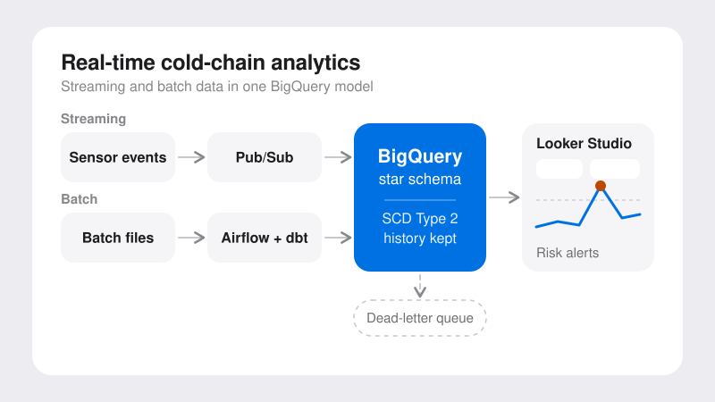
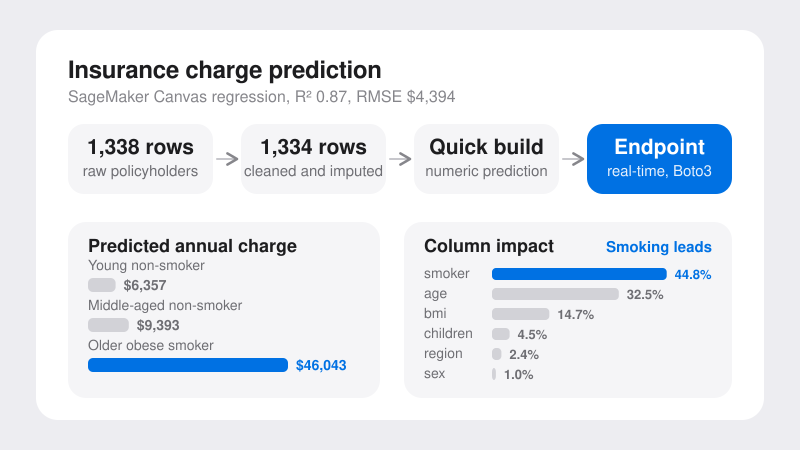
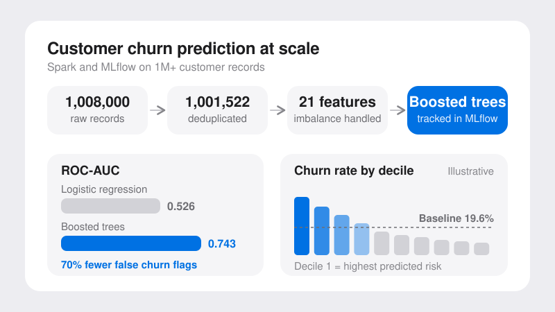
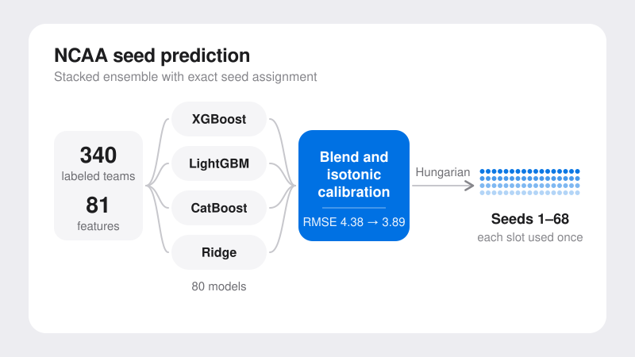

Data Engineering
Pipelines that consolidate and clean source data.
Data in. Decisions out.
Pipelines that consolidate and clean source data.
Dashboards and KPI reporting for decision-makers.
Forecasting, anomaly detection, and predictive models.
Analysis and forecasting for planning.
01
I turn raw data into decisions, from the pipeline to the model.
Foundation
I started in Data Engineering at Eli Lilly, building the ETL pipelines and warehouses that pulled scattered sources into one reporting platform people could trust. Getting the data right first is still how I work.
Analytics
A master’s at Purdue came next, then Predictive Modeling at the Krenicki Center. I learned to judge a model by whether it improves a decision.
Curiosity
On my own time I build projects end to end, from cloud pipelines to deployed models, and I read about AI most days. Lately I’m running open-weight and local LLMs to see what they can really do on my own machine.
Business Intelligence
Executive dashboards on governed data.
Tableau · Power BI · Excel
Analytics
Time-series models for planning.
Python · scikit-learn · XGBoost
Machine Learning
Validated models and anomaly detection.
Python · PySpark · RAG
Data Engineering
Warehouses that cut manual prep.
Airflow · dbt · Redshift · BigQuery
02
M.S. Business Analytics and Information Management STEM Designated
West Lafayette, IN · Aug 2025 – Aug 2026
B.E. Information Science and Engineering
Bangalore, India · Aug 2019 – Aug 2023
03
Data Scientist
Aug 2025 – May 2026West Lafayette, IN
6time-series models
Built an end-to-end forecasting pipeline for United Way of Central Indiana. It engineers 15+ features and benchmarks 6 time-series models, with automated best-model selection.
48program initiatives
Delivered MAE and RMSE diagnostic reports that nonprofit leadership adopted for resource allocation across 48 program initiatives combined.
25 yearsof SEC 10-Ks
Designed a pipeline on the SEC EDGAR database to fetch, filter, and transform 10-K reports, then converted the unstructured text into a standardized analytical dataset with a RAG-based document-processing workflow. The dataset supports benchmarking of reporting consistency and long-term disclosure trends.
Associate Consultant
Jul 2023 – Jul 2025Bangalore, India
−35%manual data prep
Built data warehouse and ETL solutions powering media monitoring executive dashboards, reducing manual data preparation by 35% and partnering with product and analytics teams to surface key insights.
+45%predictive insight
Improved data models for Marketing Mix Models (MMM) by collaborating with cross-functional data science teams and applying statistical analysis and ML techniques, resulting in a 45% improvement in predictive insights.
−40%turnaround time
Integrated and migrated 5+ disparate data sources into a unified Redshift data warehouse, defining data quality checks and SLAs that increased data consistency by 30% and accelerated reporting turnaround by 40%.
04

Data engineering
A GCP pipeline that combines streaming and batch data into one BigQuery model, with a live dashboard for shipment risk and temperature excursions.

Cloud ML
A cleaned regression model on AWS SageMaker Canvas that explains 87% of the variance in annual insurance charges, deployed to a real-time endpoint. Smoking is the dominant driver.

Machine learning at scale
An end-to-end Spark and MLflow pipeline on 1M+ customer records. The gradient-boosted model reached 0.74 ROC-AUC and ranks customers by churn risk, so retention spend goes to the right deciles.

Forecasting
A stacked ensemble of XGBoost, LightGBM, CatBoost and Ridge that predicts all 68 overall seeds, with calibration and optimal assignment so every seed slot is used exactly once.
05
Foundations
PythonSQLR
Reporting
Pipelines
Modeling
Generative AI
Delivery
06
Amazon Web Services
2026
Skills gained
Amazon Web Services
2025
Skills gained
Microsoft
2025
Skills gained
2025
Skills gained
07
3x RISE Award
Eli Lilly and Company
2023–2025
GOSO Platinum Project of the Year
Eli Lilly and Company
Merit Scholarship
Purdue University, Daniels School of Business
08
Cold-chain shipments need continuous visibility into shipment risk and temperature excursions, so problems can be flagged while they can still be acted on.
Built a GCP data platform that combines Pub/Sub streaming with Airflow and dbt batch pipelines into a BigQuery star schema. Slowly changing dimensions (SCD Type 2) track history, and dead-letter error handling keeps failed events from being lost. A Looker Studio dashboard surfaces the results.
Estimate expected annual medical cost per applicant so premiums can cover claims without overcharging lower-risk customers. The target, charges, is a dollar amount, so this is a regression problem.
1,338 people with six predictors: age, sex, BMI, children, smoker and region. The audit found 9 missing values, 1 exact duplicate and 3 corrupted charges, leaving 1,334 clean rows.
Profiled the data in SageMaker Data Wrangler and cleaned only where there was a reason: standardized categories, dropped the duplicate, imputed missing ages and BMIs with medians, and removed three charges that broke the smoking relationship (found by comparing each record with its own smoker group). The 135 high-cost outliers were kept as plausible claims. Trained a Quick-build numeric prediction model in Canvas, deployed it to a real-time endpoint, and invoked it from JupyterLab with Boto3 before deleting the endpoint to stop charges.
Acquiring a customer costs roughly five to seven times more than keeping one, yet many firms rely on blunt rules such as "no purchase in 90 days" that trigger too late. The question: can machine learning predict who will churn, and how should those predictions be used to prioritize retention?
1,008,000 raw customer records with 17 columns, reduced to 1,001,522 after removing 6,478 duplicates. About 19.7% of customers churned. Cleaned data was stored as Parquet.
Built on Apache Spark and Databricks. Cleaned and encoded the data into 21 engineered features, then handled the 4:1 class imbalance with class weights and oversampling on the training set only. Compared logistic regression with a gradient-boosted classifier using 3-fold cross-validation on PR-AUC, evaluated by decile, KS and lift, and packaged the best model as a saved Spark Pipeline tracked in MLflow with batch scoring.
The NCAA Selection Committee seeds 68 teams each year using a proprietary mix of NET rankings, strength of schedule, conference performance and quality metrics. The goal was to predict the overall seeds (1 to 68) before the bracket reveal, while respecting the tournament structure of exactly 68 seeded teams.
249 labeled training teams, augmented with 91 historical test teams and public S-curve constants to reach 340 labeled examples. The prediction target was all 365 Division I teams for the 2025-26 season.
Engineered 81 features, including NET transforms, conference strength, quadrant win composites, schedule strength, and within-season rank features. Trained XGBoost, LightGBM, CatBoost and Ridge models with 5-fold out-of-fold stacking, then a full ensemble of 80 models (20 random seeds across 4 algorithms). Predictions were blended, calibrated with isotonic regression, and assigned to exact seed slots with the Hungarian algorithm.